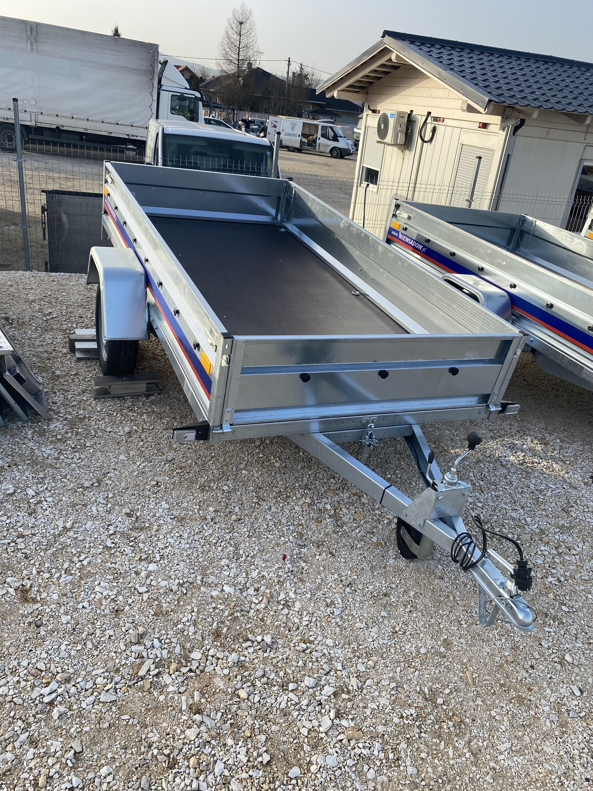

"Ha fuvar kell, nálunk lesz még hely"
"Ha fuvar kell, nálunk lesz még hely"
Pontos és gyors szállítást nyújtunk minden Ügyfelünknek. Folyamatosan bővülő vállalkozásunk törekszik minden szállítási igényt kiszolgálni, legyen az zöldhulladék elszállítás,
raklapos áruszállítás vagy akár csak egy bútor szállítása, költöztetése.
Magánszemélyeknek és cégeknek egyaránt szállítunk 100%-os elégedettségi rátával.
Rugalmas időpontfoglalás és alacsony árak jellemeznek minket. Országosan vállalunk szállítási tevékenységet!
Vállalkozásunk új billenős utánfutóval bővült melynek méretei 2,63m x 1,35m. Billenős funkciójának köszönhetően kis kerti gépekkel, traktorral, quaddal vagy egyéb eszközzel is fel lehet rá állni.Továbbá készítettünk hozzá egy rácsos magasítót mellyel ugyancsak a zöldhulladék szállítását helyeztük előnybe, ezáltal akár 10m3 zöldhulladékot is el tudunk szállítani a megengedett súlyhatár függvényében.
